Secteurs d'intervention
Saint-Gilles-les-Bains, Boucan-Canot, Saint-Paul, La Saline-les-Bains, Saint-Leu, Le Port et Trois-Bassins.
Nettoyage, préparation, reprises d'étanchéité et peinture : regardez l'état de la toiture avant travaux, puis le rendu une fois la finition terminée.
Ces avant/après montrent des toitures tôle marquées par le soleil, les traces noires, l'usure ou la rouille, puis le rendu après préparation et finition.
MS Couverture La Réunion dispose d'une assurance décennale pour les travaux concernés. L'attestation peut être présentée avant chantier.
Saint-Gilles-les-Bains, Boucan-Canot, Saint-Paul, La Saline-les-Bains, Saint-Leu, Le Port et Trois-Bassins.
Chaque série montre l'état de la toiture avant intervention et le résultat après nettoyage, traitement ou peinture.
Envoyez une photo de votre toiture, des traces visibles et de l'accès pour préparer une estimation plus précise.
Une toiture plus nette avec une finition lumineuse et protectrice.
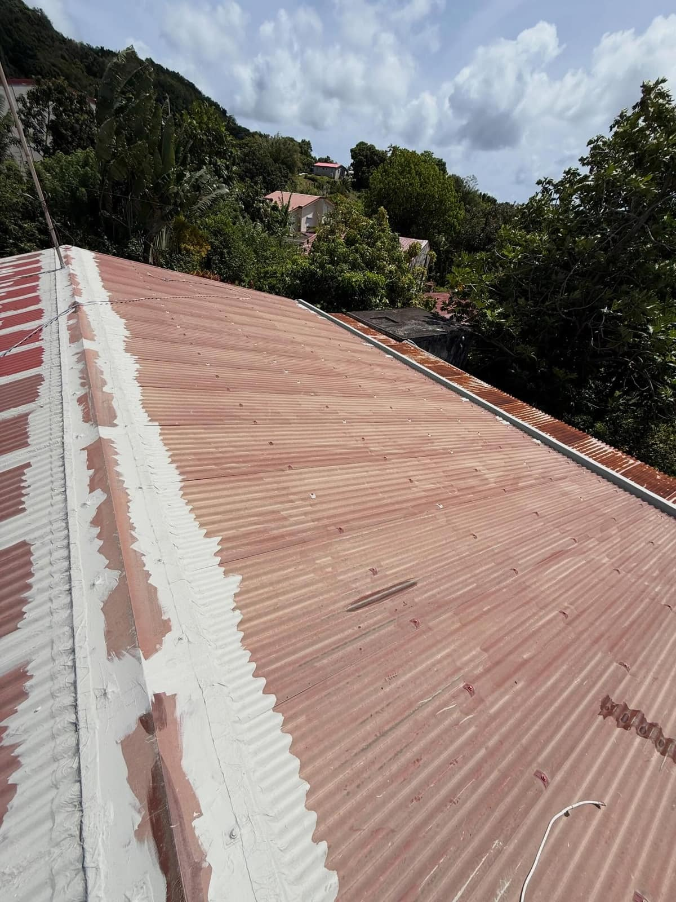
Préparation du support, contrôle des points sensibles et reprises avant finition.
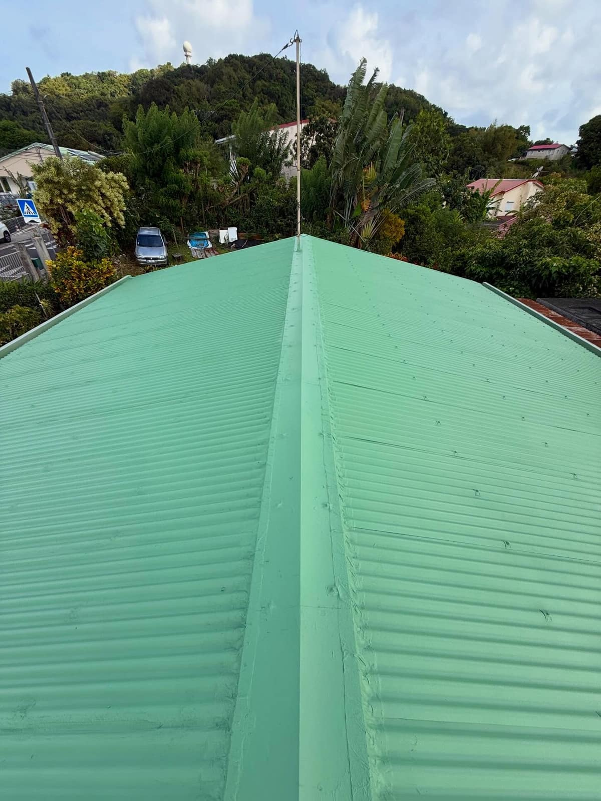
La toiture retrouve un aspect propre avec une protection adaptée au soleil et aux pluies.
Un changement de couleur net pour moderniser la toiture et protéger la tôle.
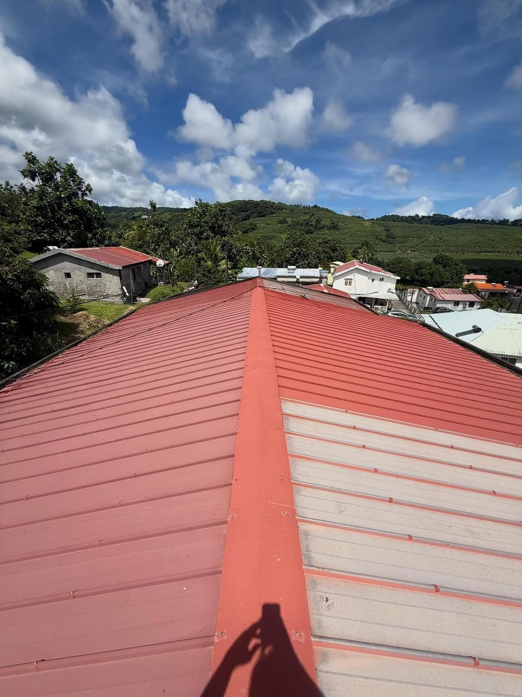
La tôle présente une couleur passée et des zones à préparer avant remise en peinture.
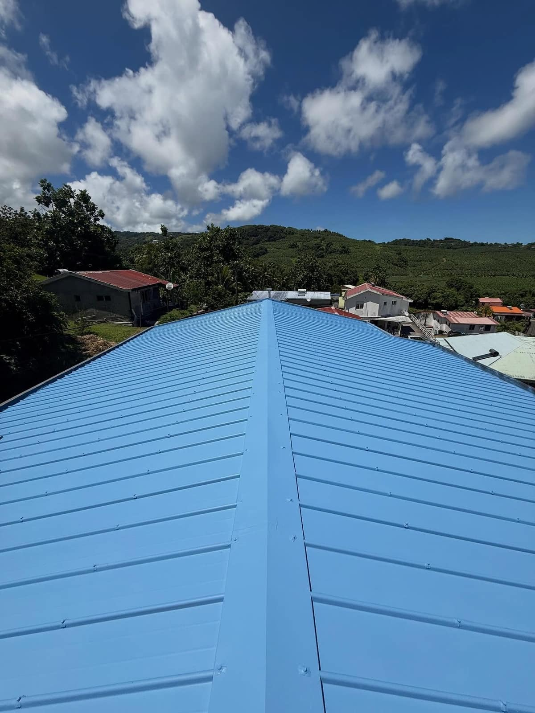
Le rendu est propre, lumineux et cohérent avec l'environnement tropical.
Une vue rapprochée pour voir la régularité de la finition sur les nervures et le faîtage.
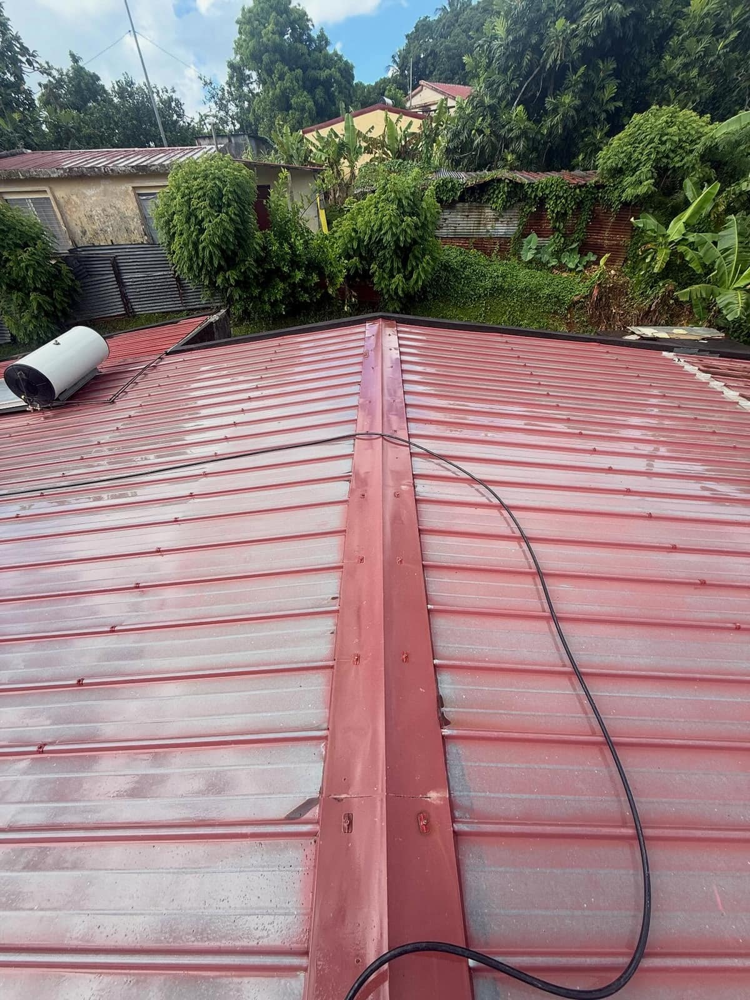
La préparation améliore l'accroche et permet une finition plus régulière.
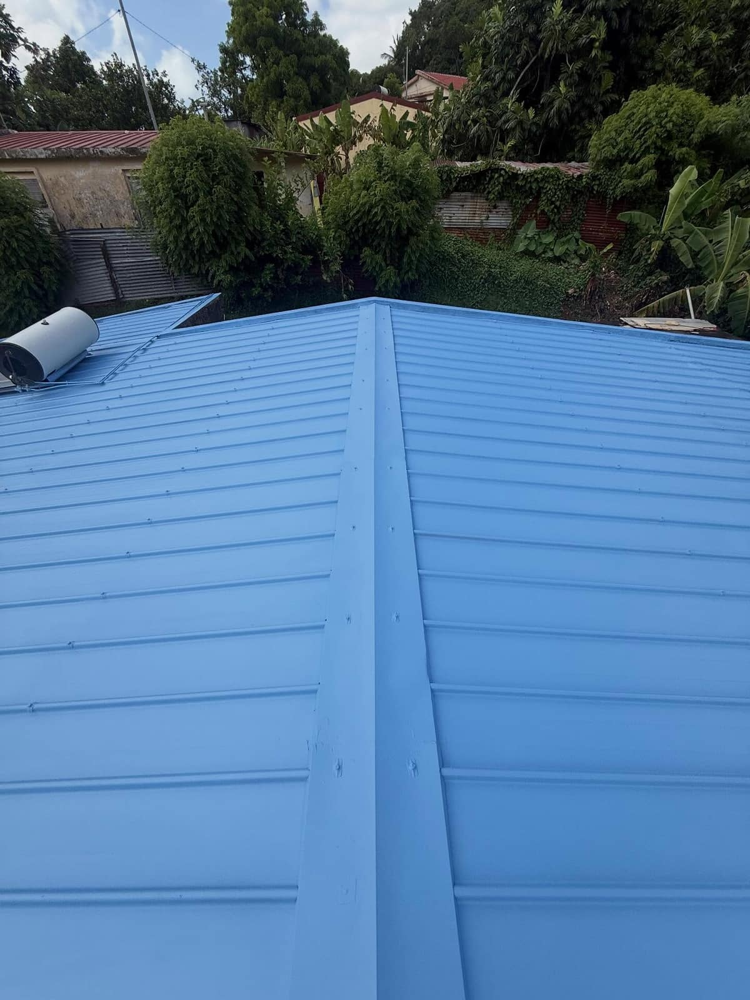
La peinture recouvre les plaques, les fixations et les zones exposées.
Avant la finition, le nettoyage fait déjà une grande différence sur l'état de la toiture.
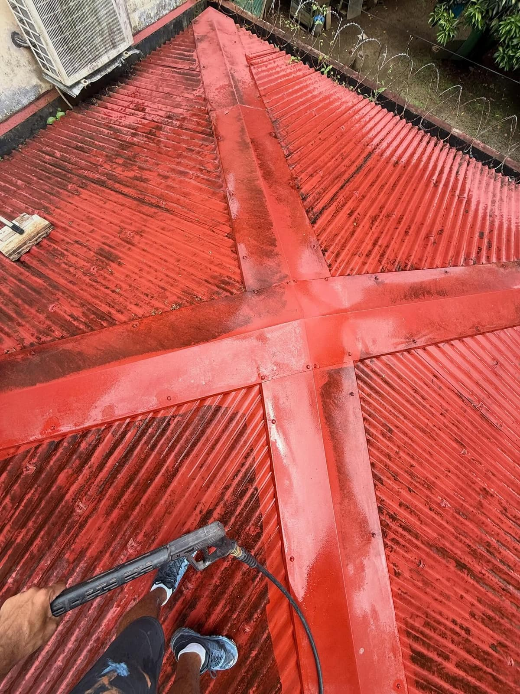
Les mousses, poussières et dépôts sont retirés avant toute protection durable.
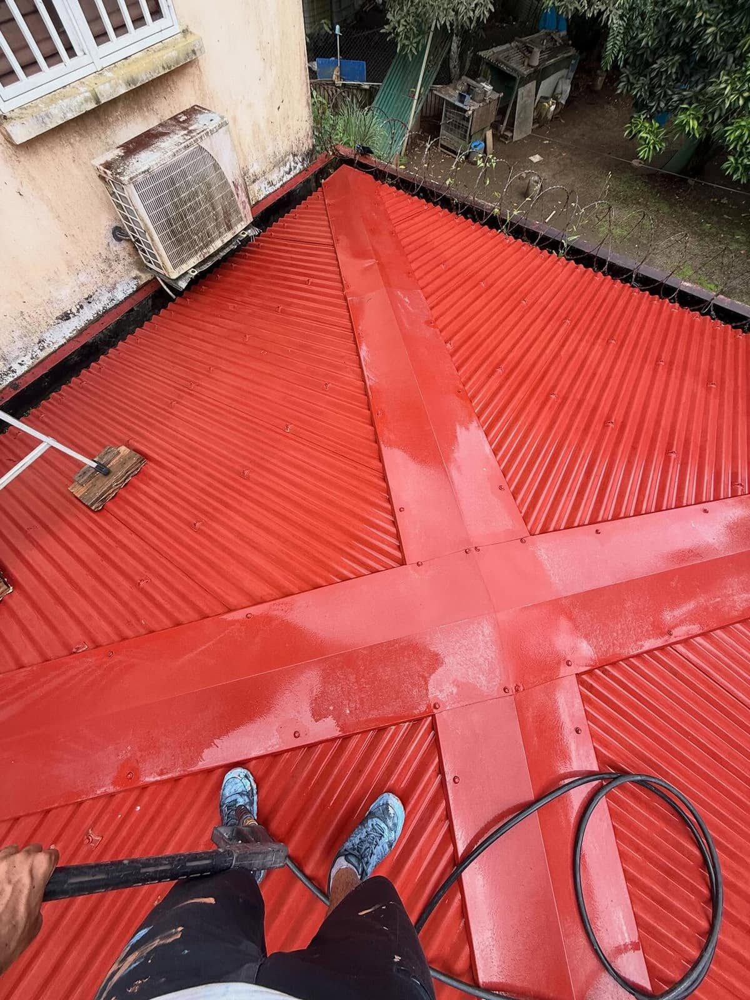
La surface redevient saine et prête pour les étapes de traitement ou de finition.
Un rendu plus clair et plus propre sur une toiture tôle exposée au soleil.
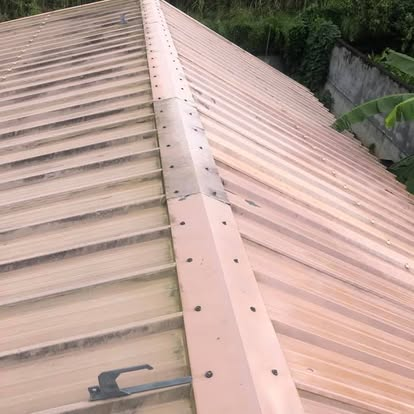
La tôle a perdu son éclat et présente des traces liées au climat.
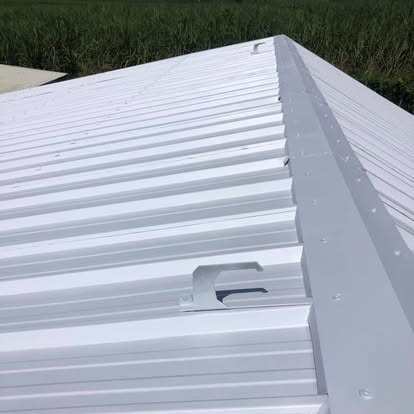
Le toit retrouve une finition propre, lumineuse et régulière.
Une toiture marquée par l’humidité remise en état avec une finition rouge uniforme.
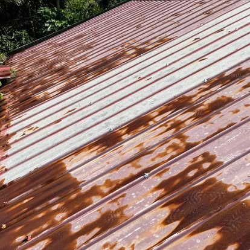
La surface était fortement marquée avant préparation.
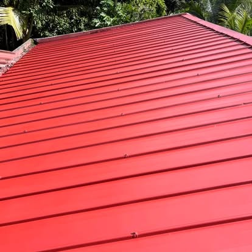
La finition est plus nette, régulière et valorise la maison.
Un nettoyage soigné avant protection pour obtenir une toiture plus propre.
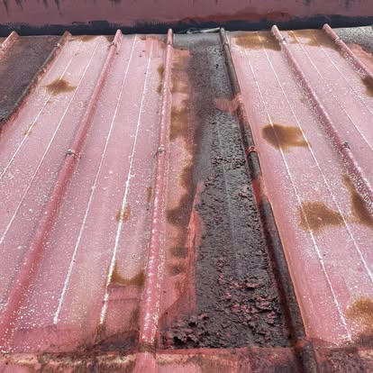
Les dépôts et l’humidité se voient nettement sur les raccords.
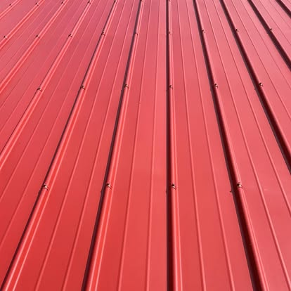
La toiture retrouve une surface plus saine et plus propre.
Une toiture vieillissante reprise pour retrouver une couleur franche.
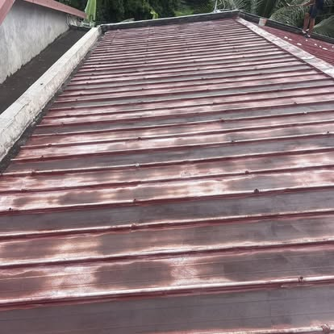
La couleur était terne avec des zones blanchies par le temps.
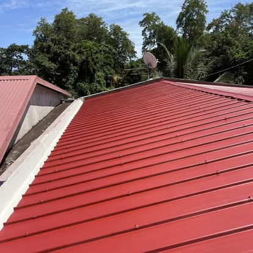
Le résultat donne une toiture beaucoup plus nette au premier regard.
Une rénovation de toiture tôle avec une finition verte très visible.
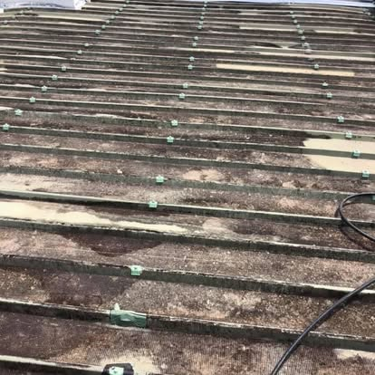
La toiture était encrassée et avait besoin d’une remise au propre.
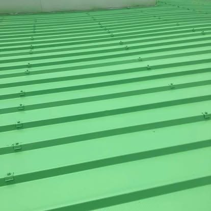
La couleur ressort mieux et la surface paraît plus régulière.
Une toiture tôle reprise avec une couleur vive adaptée au style de la maison.
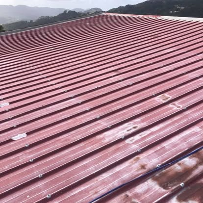
La toiture présentait des reprises et des traces visibles.
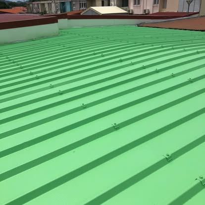
Le rendu est plus propre et plus moderne.
Si la couleur est passée mais que la tôle reste saine, la peinture toiture peut redonner un rendu net après préparation.
Voir le prix peintureSi les vis, rives ou recouvrements rouillent, il faut traiter les points faibles avant la finition.
Voir anti-rouilleUne peinture ne doit pas cacher une infiltration : la fuite doit être recherchée avant de refaire l'aspect.
Voir réparation fuitePeinture de toiture, nettoyage, étanchéité ou contrôle des fixations : MS Couverture La Réunion intervient sur les toitures tôle autour de Saint-Gilles et dans l'Ouest.